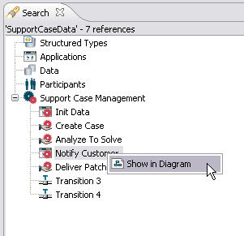

To get an overview of the references of an element:
You can now examine the list of the references in the Search View.
Figure: Overview of References
If in the Search view we have elements that have symbols, you can right-click on them and select show in diagram to show corresponding symbol in the diagram, as shown below.

Figure: Show Elements in Diagram